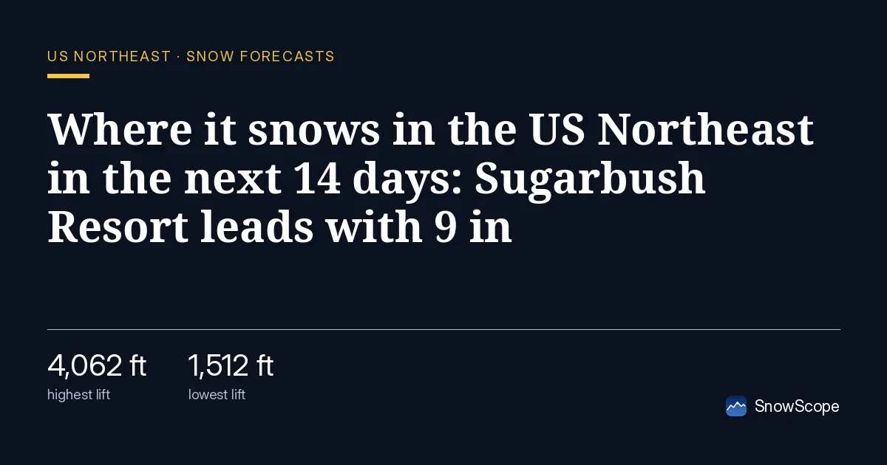
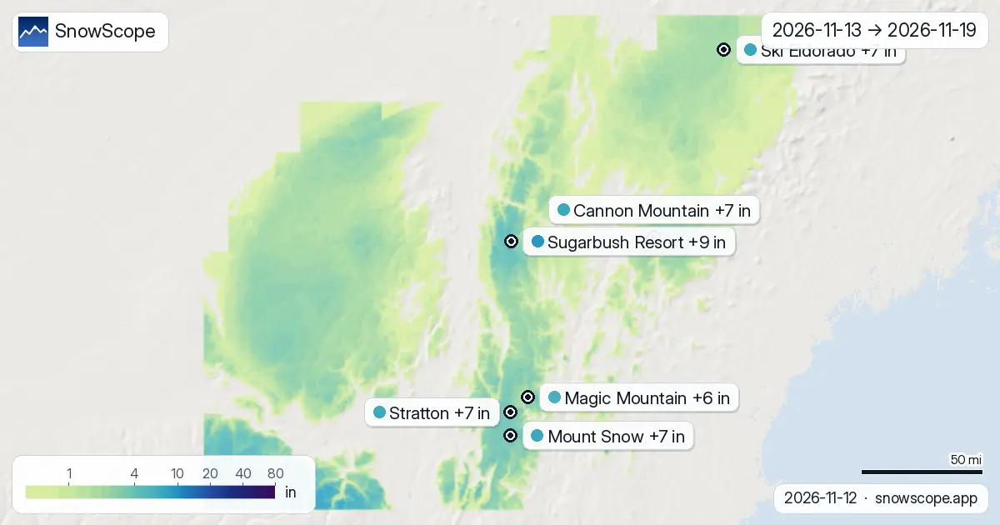
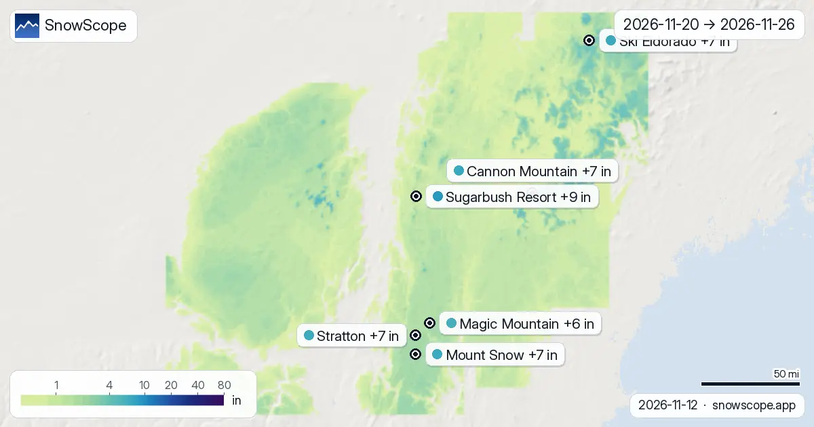
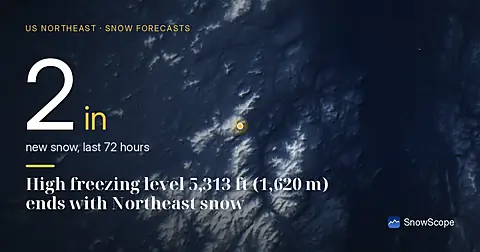
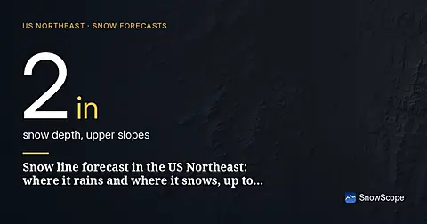

Where it snows in the US Northeast in the next 14 days: Sugarbush Resort leads with 9 in
Between 13 November and 26 November, up to 27 cm (11 in) of new snow will fall across the US Northeast mountains. Sugarbush Resort comes out ahead with about 22 cm (9 in) on its upper slopes, split unevenly: the first week holds more than half the season's total snow, with 15 November as the biggest day at 9 cm (4 in).
See the live snow forecast for Sugarbush Resort in the SnowScope appSnow depth, powder alerts and the 3D map, free.
Which week gets more snow
The two weeks are not equal. Fifty-three per cent of all the snow across the region falls in the first week, 13 to 19 November. That means the second half of the period (20 to 26 November) brings less, so if you plan to ski, the early week is your window.
Some resorts flip this pattern. Cannon Mountain and Ski Eldorado both see more snow in week two, with their biggest days coming on 26 November. Sugarbush Resort, Mount Snow, Stratton and Magic Mountain are front-loaded: they get most of their snow by 19 November.
| Resort | Snow depth | New snow, 72 h | Coming, next days | Top |
|---|---|---|---|---|
| Sugarbush Resort | 1 in (2 cm) | 2 in (5 cm) | 4 in (10 cm) | 4,062 ft (1,238 m) |
| Cannon Mountain | 0 in (0 cm) | 2 in (5 cm) | 4 in (9 cm) | 4,039 ft (1,231 m) |
| Mount Snow | 1 in (3 cm) | 2 in (4 cm) | 4 in (11 cm) | 3,586 ft (1,093 m) |
| Ski Eldorado | 0 in (0 cm) | 1 in (3 cm) | 2 in (4 cm) | 2,917 ft (889 m) |
| Stratton | 3 in (7 cm) | 3 in (8 cm) | 5 in (12 cm) | 3,881 ft (1,183 m) |
| Magic Mountain | 0 in (0 cm) | 1 in (3 cm) | 4 in (10 cm) | 2,851 ft (869 m) |

Resort snow totals across two weeks
Sugarbush Resort (United States) tops the region with about 22 cm (9 in) in 14 days, with a range of 9 cm to 35 cm the two forecasts. The first week brings 14 cm (6 in); the second adds 8 cm (3 in). Friday 15 November is the peak day, with 9 cm (4 in).
Cannon Mountain (United States) totals about 19 cm (7 in) over 14 days (5 cm to 34 cm between the Forecasts): 9 cm in week one, 10 cm in week two. Its snowiest day is 26 November with 7 cm (3 in), one of two days with 5 cm or more.
Mount Snow (United States) adds up to about 17 cm (7 in) across two weeks (9 cm to 24 cm between the Forecasts): 10 cm in the first week, 6 cm in the second. Friday 13 November brings the most, 9 cm (4 in), split across two days meeting the 5 cm threshold.
Ski Eldorado (Canada) totals about 17 cm (7 in) in 14 days (6 cm to 27 cm between the Forecasts), with just 5 cm in week one and 11 cm in week two. The 26 November snow event brings 8 cm (3 in), the season's peak.
Stratton (United States) expects about 17 cm (7 in) over two weeks (9 cm to 25 cm between the Forecasts): 10 cm by 19 November, then 7 cm (3 in) more. Friday 13 November is the heaviest day with 8 cm (3 in), one of two days with 5 cm or more.
Magic Mountain (United States) receives about 15 cm (6 in) across 14 days (8 cm to 21 cm between the Forecasts): 9 cm (4 in) in the first week, 5 cm (2 in) in the second. The 13 November event brings 8 cm (3 in); two days hit 5 cm or more.

Snow depth by elevation
Height matters. Across all the region's mountain terrain between 1,000 m and 1,500 m, the typical two-week total is 15 cm (6 in), with the snowiest quarter of that band seeing 18 cm (7 in) or more. Lower slopes will receive less; higher terrain above 1,500 m will vary with local wind and exposure.

The two days when most resorts get snow
Friday 13 November stands out in the first week: across the 104 Northeast resorts tracked here, 18 of them will have 5 cm or more that day, with Mount Snow reaching 9 cm (4 in).
In the second week, Wednesday 25 November brings the next significant event, with 12 resorts at 5 cm or more and Mount Snow again the leader at 6 cm (2 in).
Regional snow coverage
Before these two weeks, the region had snow at only 3 resorts. By 15 November, that grows to 40 resorts with snow cover. Over the full 14 days, about 1,027 km² (397 sq mi) of the region's mountain terrain will accumulate 20 cm or more.
Tips for skiers
- Early week is your best bet: more than half the two weeks' snow falls 13 to 19 November, so plan your trip for that window if possible.
- Check the maps twice: depth forecasts can shift, especially for days further out. Come back 48 hours before you drive to confirm the totals.
- Thin snow covers rocks: even after 9 cm falls, check the depth map too before heading out, especially at lower elevations.
- Before any off-piste or backcountry day, read the official avalanche bulletin for your area.
- Resort status is not forecast here: visit the resort website to confirm lifts are open and runs are ready.
About these numbers
Resort snow depths are the deepest snow on the resort's upper slopes on the date shown; they are estimates for an area, not a measurement at one point. Forecasts can change. Always read the official avalanche bulletin before going off-piste.
Official avalanche bulletins: Mount Washington Avalanche Center
Cite this report
For research, teaching or the press: the numbers and charts are free to reuse under CC BY 4.0 with this citation.
SnowScope (2026), Where it snows in the US Northeast in the next 14 days: Sugarbush Resort leads with 9 in, https://snowscope.app/blog/en/2026/11/us-northeast-2-week-snow-forecast-maps-12-november-2026.html, accessed 2026-11-12
SnowScope (Atlas Labs). (2026, November 12). Where it snows in the US Northeast in the next 14 days: Sugarbush Resort leads with 9 in. SnowScope snow reports. https://snowscope.app/blog/en/2026/11/us-northeast-2-week-snow-forecast-maps-12-november-2026.html
BibTeX
@misc{snowscope2026usnortheast2weeksnowfore,
author = {{SnowScope (Atlas Labs)}},
title = {Where it snows in the US Northeast in the next 14 days: Sugarbush Resort leads with 9 in},
year = {2026},
month = nov,
howpublished = {\url{https://snowscope.app/blog/en/2026/11/us-northeast-2-week-snow-forecast-maps-12-november-2026.html}},
note = {Published 2026-11-12 18:27 UTC; accessed 2026-11-12}
}· CC BY 4.0 · Methods, data and tools →
Sugarbush Resort: snow and temperature by height, this winter vs last (tools) →
Follow Sugarbush Resort
Free: a message when fresh snow is coming, and the forecast every morning.
More snow reports

On November 10, the freezing level reaches 5,313 ft (1,620 m) above Northeast summits, bringing rain before 20–25 cm of snow arrives.

Okemo Mountain will get 15 in (38 cm) of new snow by November 14, with 11 in (29 cm) on November 13, SnowScope from November 11 shows.

Our forecast has the 0 °C level in the US Northeast between 0 ft (0 m) and 4,593 ft (1,400 m) in the coming days. On Thursday 12 November, in the …